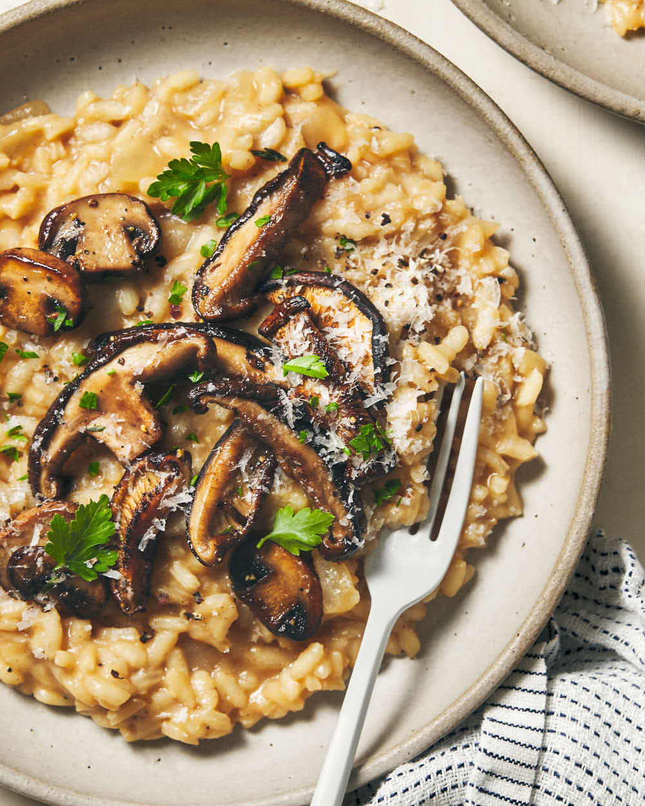

Mushroom Risotto

Description
Mushroom Risotto is creamy Italian rice dish made with Arborio rice and loaded with mushrooms.
A vegetarian dish that is comfort in a bowl!
Ingredients
- vegetable stock
- Olive oil
- Brown onion
- Arborio rice
- Dry white wine
- Garlic cloves
- Butter
- Portabella mushrooms
- Parsley
- Parmesan
Steps
- Heat the stock until almost boiling. Remove from heat and cover to keep warm.
- Heat 1 tablespoon of the oil in a large saucepan and cook the onion, stirring, for 5 mins or until tender.
Stir in the rice until well coated followeed by wine and cook until wine has evaporated.
Add 1 ladleful of stock mixture and gently stir until stock is absorbed.
Repeat with the remaining stock mixture until the rice is tender with just a slight bite.
- Meanwhile cook the garlic, stirring, for 3-4 mins or until golden and crisp. Use a slotted spoon to transfer to a plate.
Increase heat to high. Cook the mushrooms in the butter, in batches, stirring, for 5 mins or until golden and tender. Transfer to another plate.
Return mushrooms to the pan adding the garlic and parsley.
- Stir the plain mushrooms and parmesan into the risotto. Set aside, covered, for 2 mins to melt.
Divide among plates and top with reserved garlic mushrooms. Season with pepper.